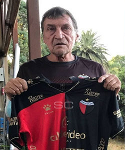

Nuevo DT - Julio Falcioni
El Emperador, quien dejó Independiente, será el DT del Sabalero: tendrá el desafío de dirigir al equipo en la Libertadores. De esta manera, Falcioni tendrá el desafío de comandar a Colón, que afrontará una triple competencia en esta temporada, entre el torneo local, la Copa Libertadores y la Copa Argentina.
Ver Más...